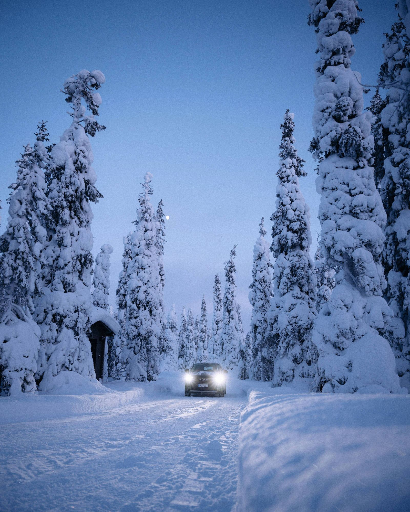
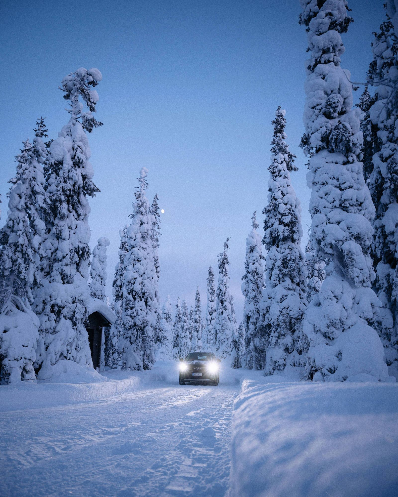
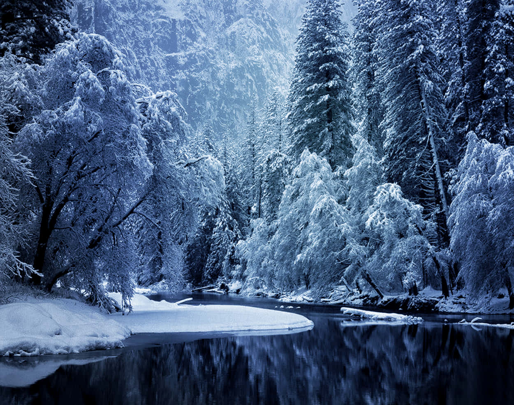
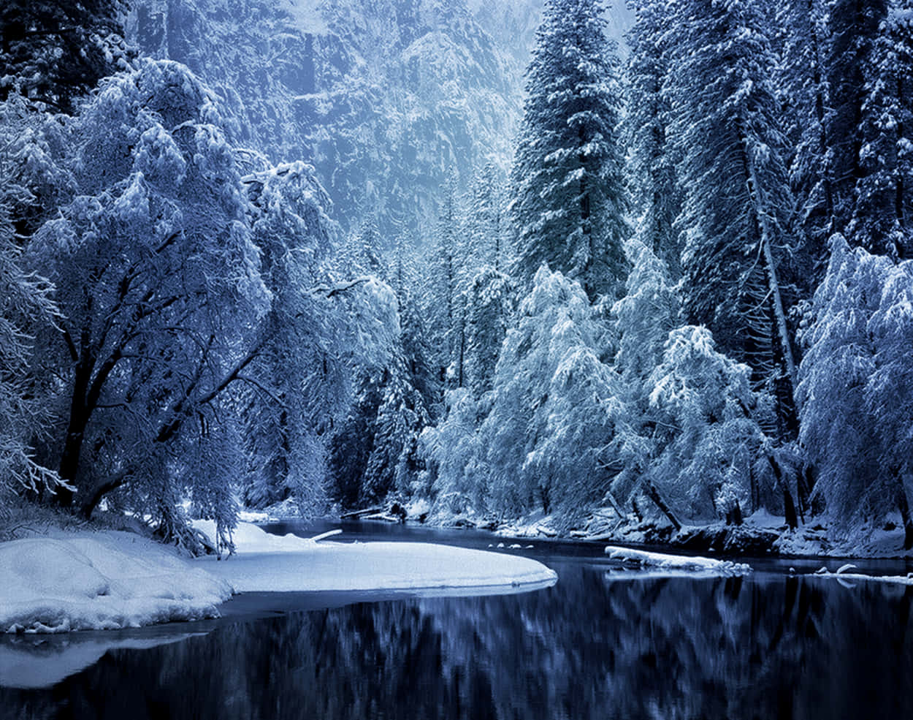

თოვლი არის ბუნებრივი მოვლენა და მისი მოსვლა უხარია ყველას რადგან ბუნების საუკეთესო მოვლენა იგი მოდის მაღლობ ადგილებში
თოვლი — ატმოსფერული ნალექის სახე, რომელსაც კრისტალიზებული წყლის ყინულის ფორმა აქვს და მრავალი ფიფქისგან შედგება, რომლებიც ღრუბლებიდან ცვივა. თოვლს ღია და შესაბამისად რბილი სტრუქტურა აქვს, გარდა იმ შემთხვევისა, თუ ის გარე წნევითაა დაწნეხილი.
 
